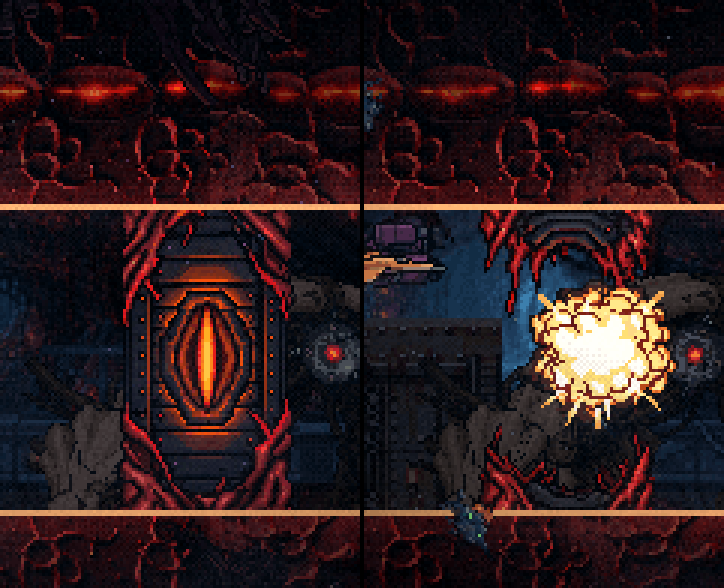
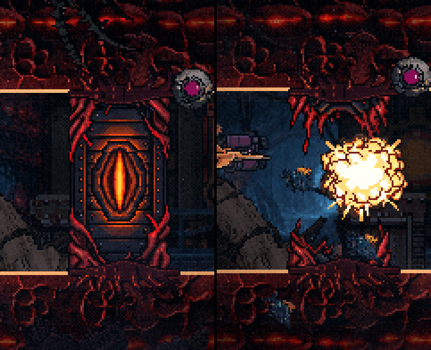
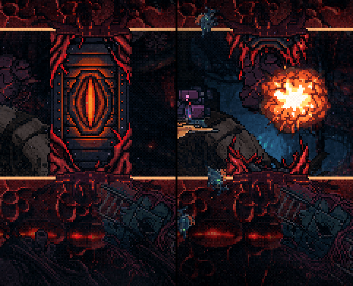
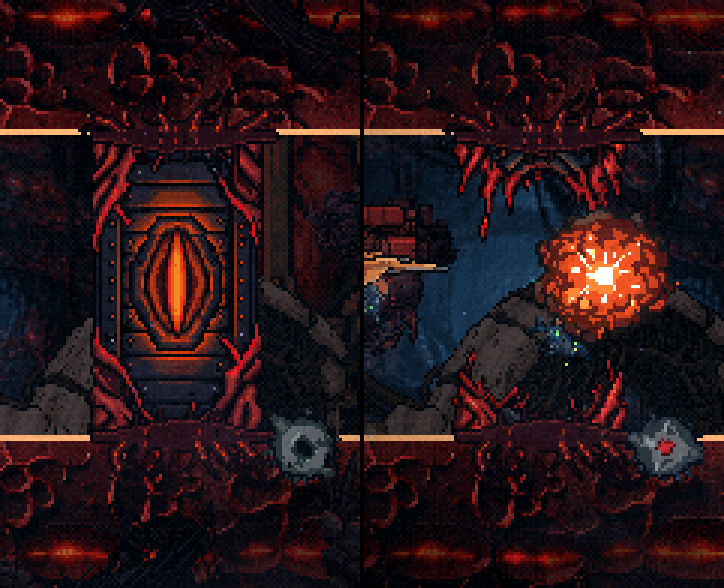
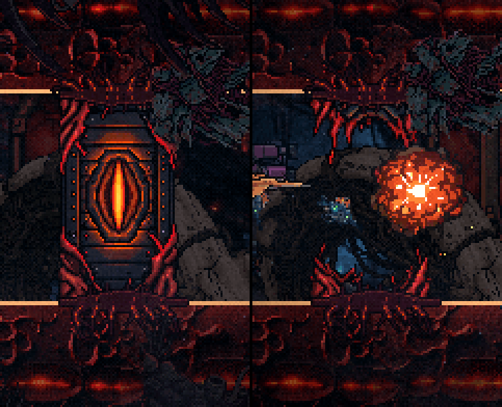

As portas do duto enraizadas · item 2b
17/10/2026 · Polimento, bloco C. Sua sugestão: "você colocou raízes nos tubos… enraizou o esfíncter final… mas as portas dos dutos ainda estão sem acabamento, não seria interessante enraizá-las também?" Feito enquanto você estava fora. Nada foi instalado: a folha espera a sua escolha, como sempre.
Os GIFs são a F4 de verdade com as raízes montadas só na memória, na primeira porta do duto (t=72). Para mostrar a porta quebrada, ela é estourada à força quando passa de x=150.
Decidido (17/10, à noite) · a D está no jogo
instaladoVocê escolheu a D: "ela preenche bem a base e a parte de cima da porta, além de ficar interessante quando estoura". As duas peças estão em public/sprites/f4-porta-raiz-chao.png e …-teto.png.
- Quem as prende é o
RaizesPorta(src/systems/). Ele vê cada porta do duto que nasce, prende um par (chão e teto) no x dela e relê as duas superfícies da borda a cada quadro, como o esfíncter faz. Depth −0,52: na frente da borda, atrás dos props. - As raízes ficam com a lasca depois do estouro, porque os cotos continuam presos à parede. E não somem de estalo: a porta é recolhida em x=−40, mas a raiz é mais larga, então ela termina de sair da tela sozinha.
- Elas são posicionadas depois da física de cada quadro. Antes disso elas andariam 1,4px atrás da porta e tremeriam contra ela.
- A
probe-f4-frenteconfere isso agora: as 3 portas têm raízes no x delas, encostadas nas duas superfícies, com 0px de desvio no pior quadro.

O texto abaixo é a folha de antes da sua decisão.
O que muda
- Hoje a porta mora atrás da faixa do duto e entra 14px na parede de cada lado. A linha acesa da borda passa reto por cima dela: não tem transição nenhuma.
- As raízes são feitas à mão (
scripts/_polimento/_raizes-porta.mjs), com a mesma ferramenta das raízes do esfíncter. Essa ferramenta agora é um módulo compartilhado,_raizes-lib.mjs, e as raízes do esfíncter saem idênticas, byte a byte. Uma peça no chão e a mesma, virada, no teto. Ficam à frente da borda (−0,52, como as do esfíncter), bem na linha da superfície: um lábio de tecido sobre a linha e raízes abrindo em leque para dentro da parede. - As cores são as do duto, tiradas da própria porta e da faixa C: tecido vinho quase preto, veias vermelhas e o laranja de lava da fenda da porta acendendo as veias.
- Presas à porta: andam com ela e relêem a superfície a cada quadro, como as do esfíncter. Continuam depois do estouro, nos dois cotos da porta quebrada.
- Não invadem a passagem: a fresta da porta quebrada mede 38px, e cada coto aparece com 15–23px. Por isso nada passa de 9px acima da linha nem sai da largura da porta.
As quatro variações, ampliadas (inteira · quebrada)





O corredor é sorteado a cada rodada, então a porta não cai exatamente no mesmo lugar em todas as ampliações.
Em movimento


A decisão (sua)
- minha apostaD: é a única que lê a meia distância, sem lupa. Lê como uma porta que cresceu dentro do tecido, sem parecer colada na frente da parede.
- alternativaB, se você quiser algo mais discreto: é a que menos mexe na silhueta da porta.
Como entra no código, depois da sua escolha: as duas peças vão para public/sprites/, e o matarPorta/a porta ganham as raízes presas, no molde do posicionarRaizes do esfíncter. A probe-f4-esfincter ganha a conferência de que elas seguem a porta e ficam fora da fresta. Sem PixelLab: zero gerações.